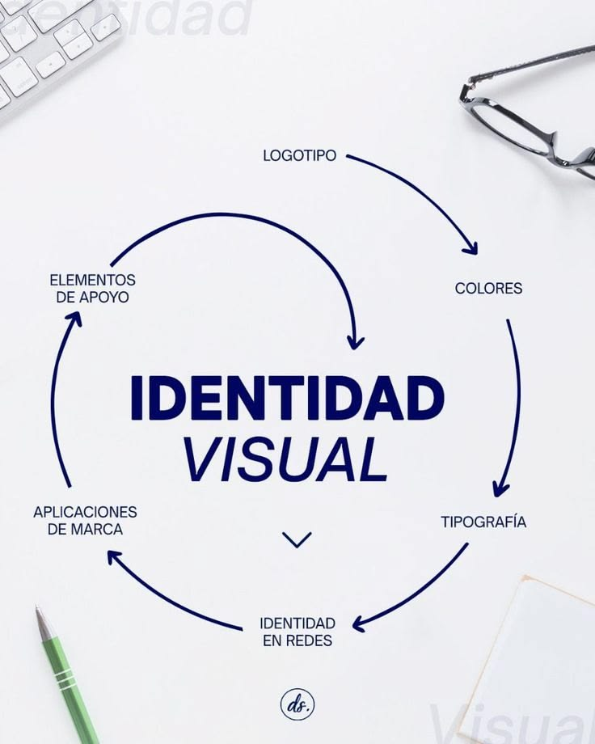

ENTENDER ANTES DE TRANSFORMAR
Diagnóstico
de marca
Analizamos la situación actual de tu marca para identificar oportunidades de evolución y reconocer aquello que vale la pena conservar.
- Auditoría de marca
- Análisis de identidad visual
- Análisis de comunicación
- Identificación de oportunidades